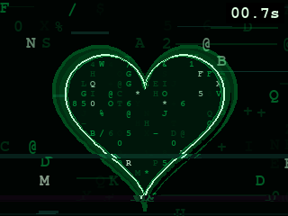
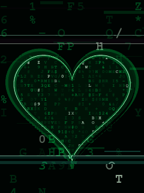

RpiZero2WDisplay
On-demand X11, touchscreen calibration, and pygame/OpenCV tooling for a Waveshare LCD on DietPi CLI mode.
Open repositoryFeatured Work

On-demand X11, touchscreen calibration, and pygame/OpenCV tooling for a Waveshare LCD on DietPi CLI mode.
Open repositoryWearable glove sensor prototype with UDP streaming, PC monitoring, PCB assets, and Unity/XR visualization.
Open repositoryUnity interworking experiment for synchronizing real-world IoT data with virtual representations.
Open repository
Smart companion-care concept connecting IoT services with practical monitoring and support scenarios.
Open repositoryInteractive Console
latency21 ms
stream50 Hz
confidence84%
Toolbox